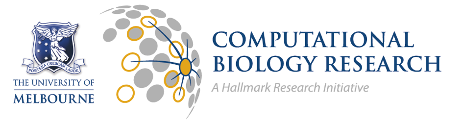
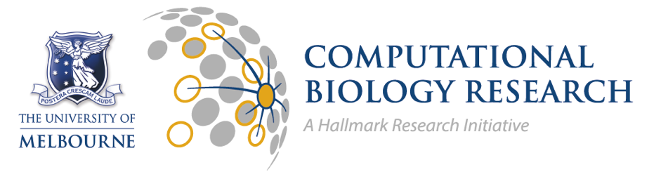

PoreCamp Australia 2017
PoreCamp.AU is a training "bootcamp" based around the Oxford Nanopore MinION sequencing platform,
held in Australia. It represents a unique opportunity to learn about this exciting new sequencing
platform from some of the leading experts in the field. It is a hands-on workshop run over 3 days,
covering the technology, library preparation techniques (rapid, 1D and 2D), starting runs,
bioinformatics analysis and interpretation.
The series was originally founded by Nick Loman and Joshua Quick (see UK PoreCamp ).
Applications for PoreCamp.AU 2017 are now open! 30 applicants will be selected to receive direct
training from experienced MinION users from around the world,
at the University of Melbourne from 8th-10th February 2017
(immediately prior to the Lorne Genome conference)
Follow us on Twitter with #porecampau
Details
- Held in Parkville precinct in Melbourne.
- Wed 8th to Fri 10th Feb 2017.
- Based on the successful UK PoreCamp.
- Speakers include David Eccles (NZ) and Joshua Quick (UK)!
- Limited to 30 attendees who must be members of the MinION programme.
- Itinerary of PoreCampAU
Camp Objectives
- Develop best wet-lab practises to produce a high-quality MinION library.
- Hands-on experience, running your MinION on your own computer.
- Discover suitable data-handling methods for MinION output.
- Discuss latest bioinformatic methods for analysis of real-time nanopore data.
How to Apply
Early-bird Application Form (closes Dec 16th) .
Early-bird applications will be informed if their application is "successful" or "pending" by Dec 18th.
Final application date is Jan 6th, and applicants will be notified by Jan 13th.
Attendance fee: $900 (includes flowcell & library kit for MinION run and day-time catering).
You must BYO MinION device and compatible laptop.
Accommodation not provided - recommendations
For more information please contact Andrew Siebel .
Trainers
- Ken McGrath (AGRF)
- Alexis Lucattini (AGRF)
- Lavinia Gordon (AGRF)
- Louise Judd (UniMelb)
Sponsors


 
